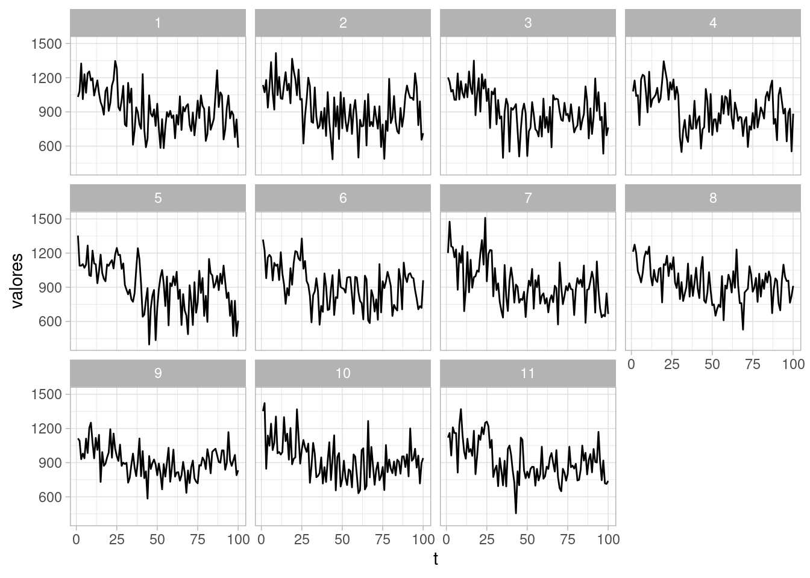
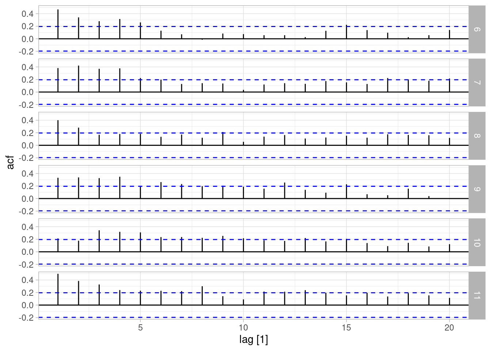

Código
library(tidyverse)
library(kableExtra)
library(DiagrammeR)
locale <- Sys.setlocale("LC_TIME", "es_ES.UTF-8")
library(lubridate)
library(fpp3)
ggplot2::theme_set(ggplot2::theme_light())library(tidyverse)
library(kableExtra)
library(DiagrammeR)
locale <- Sys.setlocale("LC_TIME", "es_ES.UTF-8")
library(lubridate)
library(fpp3)
ggplot2::theme_set(ggplot2::theme_light())En esta parte veremos una introducción a los modelos bayesianos dinámicos de espacio de estados. Estos modelos engloban otros enfoques (ARIMA, suavizamiento exponencial) como casos particulares, y nos permite:
Aunque en muchos procesos tiene sentido considerar que la observación \(y_t\) es una función causal de observaciones pasadas, más generalmente podemos pensar que existen estados que determinan el proceso generador de la serie. El estado en el que se encuentra una proceso en un determinado momento puede tener varias componentes, algunas estándar como nivel actual o periodo de estacionalidad, pero también otras menos estándar, como niveles de otras variables.
En primer lugar, consideraremos modelar la tendencia-ciclo de series con el enfoque de espacio de estados. En primer lugar, tenemos una ecuación de observación, que está dada por
\[y_t = \textrm{nivel}_t + \epsilon_t,\] donde las \(\epsilon_t \sim N(0,\sigma_\epsilon)\) independientes. Es decir, dado el nivel, las observaciones \(y_t\) son independientes. Adicionalmente tenemos una ecuación de transición de estados, que en este caso es simplemente:
\[\textrm{nivel}_t = \textrm{nivel}_{t-1} + \eta_t\] donde \(\eta_t \sim N(0,\sigma_\eta)\) independientes.
Podemos hacer un diagrama como sigue para esta situación:
grViz('
digraph {
graph [ranksep = 0.2]
node [shape=circle]
nt
nt1
nt2
ntm1
etm1
et
et1
et2
node [shape=plaintext]
# Y1 [label = <Y<SUB>1</SUB>>]
dots [label = "..."]
Ytm1 [label = <Y<SUB>t-1</SUB>>]
Yt [label = <Y<SUB>t</SUB>>]
Yt1 [label = <Y<SUB>t+1</SUB>>]
Yt2 [label = <Y<SUB>t+2</SUB>>]
etm1 [label = <e<SUB>t-1</SUB>>]
et [label = < e<SUB>t. </SUB>>]
et1 [label = <e<SUB>t+1</SUB>>]
et2 [label = <e<SUB>t+2</SUB>>]
ntm1 [label = <n<SUB>t-1</SUB>>]
nt [label = < n<SUB>t </SUB>>]
nt1 [label = <n<SUB>t+1</SUB>>]
nt2 [label = <n<SUB>t+2</SUB>>]
edge [minlen = 3]
#Y1 -> dots
#dots -> Ytm1
#Ytm1 -> Yt
#Yt -> Yt1
#Yt1 -> Yt2
ntm1 -> Ytm1
ntm1 -> nt
nt1 -> Yt1
nt -> Yt
nt2 -> Yt2
nt -> nt1
nt1 -> nt2
#e1 -> Y1
etm1 -> Ytm1
et -> Yt
et1 -> Yt1
et2 -> Yt2
{rank=same; Ytm1; Yt; Yt1; Yt2}
{rank=max; ntm1; nt; nt1; nt2}
{rank=min; etm1; et; et1; et2}
}
', width = 300, height = 150)Nótese que en esta gráfica, las \(y_t\) no son independientes: están correlacionadas a través de caminos abiertos que pasan por el estado, que en este caso es el nivel de la serie.
Los modelos de espacio de estados para serie de tiempo consisten en dos ecuaciones. Si \(y_t\) son los datos observados y \(\theta_t\) son los parámetros que describen el estado, tenemos la ecuación de observación \[y_t = f(\theta_t, \epsilon_t)\] Es decir, cómo se relaciona el estado con las observaciones, y una ecuación de evolución del estado: \[\theta_t = g(\theta_{t-1}, \eta_t)\] En los modelos dinámicos lineales (DLM), \(f\) y \(g\) son funciones lineales.
Nota: más adelante veremos detalles de este planteamiento, en particular para los DLMs, y por qué aún cuando haya dependencias de más largo plazo en estado siempre es posible escribir nuestros modelos de esta forma.
Para completar este modelo, es necesario:
Usualmente consideramos que el nivel debe tener movimientos relativamente suaves, de manera que \(p(\sigma_\eta)\) debe estar adecuadamente concentrada cerca de 0.
Empezamos con un ejemplo clásico y simple, que consiste en medidas anuales del nivel del río Nilo.
Usaremos Stan para ver los detalles de la implementación del modelo de nivel local:
library(cmdstanr)This is cmdstanr version 0.5.3- CmdStanR documentation and vignettes: mc-stan.org/cmdstanr- CmdStan path: /home/runner/.cmdstan/cmdstan-2.31.0- CmdStan version: 2.31.0source("../R/limpiar_draws.R")
modelo_nivel <- cmdstan_model("../src/series-de-tiempo/modelo-nivel-local.stan")
print(modelo_nivel)data {
int<lower=0> N;
vector[N] y;
real s_obs;
int<lower=0> n_h; //numero de periodos de pronóstico
real q;
}
parameters {
real alpha_1;
real<lower=0> sigma_nivel;
real<lower=0> sigma_obs;
vector[N + n_h] z_nivel;
}
transformed parameters {
vector[N + n_h] mu;
vector[N + n_h] alpha;
alpha[1] = alpha_1;
mu[1] = alpha[1];
for(t in 2:(N + n_h)){
alpha[t] = alpha[t-1] + z_nivel[t] * sigma_nivel;
mu[t] = alpha[t];
}
}
model {
y[1:N] ~ normal(mu[1:N], sigma_obs);
alpha_1 ~ normal(y[1], s_obs);
z_nivel ~ normal(0, 1);
sigma_nivel ~ normal(0, q * s_obs);
sigma_obs ~ normal(0, s_obs);
}
generated quantities{
vector[N] y_rep;
vector[n_h] y_f;
for(t in 1:N){
y_rep[t] = normal_rng(mu[t], sigma_obs);
}
for(h in 1:n_h){
y_f[h] = normal_rng(mu[N + h], sigma_obs);
}
}sims <- modelo_nivel$sample(
data = list(y = Nile, N = length(Nile), s_obs = 200, q = 0.5, n_h = 4),
parallel_chains = 4, refresh = 1000, init = 0.1, step_size = 0.1,
adapt_delta = 0.99)Running MCMC with 4 parallel chains...
Chain 1 Iteration: 1 / 2000 [ 0%] (Warmup)
Chain 2 Iteration: 1 / 2000 [ 0%] (Warmup)
Chain 3 Iteration: 1 / 2000 [ 0%] (Warmup) Chain 3 Informational Message: The current Metropolis proposal is about to be rejected because of the following issue:Chain 3 Exception: normal_lpdf: Location parameter[2] is inf, but must be finite! (in '/tmp/Rtmp9ISXx1/model-277e478edb03.stan', line 31, column 2 to column 38)Chain 3 If this warning occurs sporadically, such as for highly constrained variable types like covariance matrices, then the sampler is fine,Chain 3 but if this warning occurs often then your model may be either severely ill-conditioned or misspecified.Chain 3 Chain 4 Iteration: 1 / 2000 [ 0%] (Warmup)
Chain 2 Iteration: 1000 / 2000 [ 50%] (Warmup)
Chain 2 Iteration: 1001 / 2000 [ 50%] (Sampling)
Chain 3 Iteration: 1000 / 2000 [ 50%] (Warmup)
Chain 3 Iteration: 1001 / 2000 [ 50%] (Sampling)
Chain 4 Iteration: 1000 / 2000 [ 50%] (Warmup)
Chain 4 Iteration: 1001 / 2000 [ 50%] (Sampling)
Chain 1 Iteration: 1000 / 2000 [ 50%] (Warmup)
Chain 1 Iteration: 1001 / 2000 [ 50%] (Sampling)
Chain 2 Iteration: 2000 / 2000 [100%] (Sampling)
Chain 2 finished in 8.1 seconds.
Chain 3 Iteration: 2000 / 2000 [100%] (Sampling)
Chain 3 finished in 8.2 seconds.
Chain 1 Iteration: 2000 / 2000 [100%] (Sampling)
Chain 4 Iteration: 2000 / 2000 [100%] (Sampling)
Chain 1 finished in 8.6 seconds.
Chain 4 finished in 8.6 seconds.
All 4 chains finished successfully.
Mean chain execution time: 8.4 seconds.
Total execution time: 8.8 seconds.Mostramos primero nuestra estimación de las desviaciones estándar para el nivel y para la observación:
sims$summary(c("sigma_obs", "sigma_nivel"))# A tibble: 2 × 10
variable mean median sd mad q5 q95 rhat ess_bulk ess_tail
<chr> <dbl> <dbl> <dbl> <dbl> <dbl> <dbl> <dbl> <dbl> <dbl>
1 sigma_obs 122. 122. 12.6 12.7 102. 143. 1.00 974. 1712.
2 sigma_nivel 44.0 42.1 15.7 15.9 21.7 72.2 1.01 621. 1320.Y ahora resumimos y mostramos cómo se ve el nivel inferido bajo nuestro modelo.
sims_nivel_tbl <- sims$draws(c("mu"), format = "df") |>
limpiar_draws(c("mu")) Warning: Dropping 'draws_df' class as required metadata was removed.media_tbl <- sims_nivel_tbl |>
group_by(variable, t) |>
summarise(media = mean(valores), q5 = quantile(valores, 0.05),
q95 = quantile(valores, 0.95))`summarise()` has grouped output by 'variable'. You can override using the
`.groups` argument.ggplot(sims_nivel_tbl |> filter(variable == "mu")) +
geom_line(aes(x = t, y = valores, group = .draw),
alpha = 0.01, size = 0.1, colour = "red") +
geom_line(data = media_tbl, aes(x = t, y = media), colour = "red") +
geom_point(data = tibble(y = Nile), aes(x = 1:length(Nile), y = Nile))Warning: Using `size` aesthetic for lines was deprecated in ggplot2 3.4.0.
ℹ Please use `linewidth` instead.
En esta gráfica:
Podemos hacer chequeos predictivos posteriores simulando distintas series a partir de los parámetros ajustados, y viendo si la estructura difiere mucho de
obs_rep_tbl <- sims$draws(c("y_rep"), format = "df") |>
limpiar_draws(c("y_rep")) Warning: Dropping 'draws_df' class as required metadata was removed.resumen_tbl <- obs_rep_tbl |>
filter(.draw <= 10) #|>
#group_by(variable, t, indice, .draw) |>
#summarise(media = mean(valores), q5 = quantile(valores, 0.05),
# q95 = quantile(valores, 0.95))resumen_tbl <- resumen_tbl |>
bind_rows(tibble(t = 1:length(Nile), valores = Nile, .draw = 11))
ggplot(resumen_tbl, aes(x = t, y = valores)) + geom_line() +
facet_wrap(~ .draw)
Como es usual, cualquier resumen relevante puede usarse para hacer chequeos predictivos posteriores, por ejemplo, las gráficas de acutocorrelación de datos simulados (una caja tiene los verdaderos datos observados):
resumen_tbl |> as_tsibble(index = t, key = .draw) |>
filter(.draw > 5, t <= 100) |>
ACF(valores) |> autoplot()
Finalmente, podemos ver cómo se ven pronósticos bajo este modelo. En este caso, en la parte de cantidades generadas incluímos el código relevante. Nuestro pronóstico podríamos graficarlo como sigue (con intervalos de 90%, por ejemplo):
pronosticos_tbl <- sims$draws(c("y_f"), format = "df") |>
limpiar_draws(c("y_f")) |>
group_by(variable, t) |>
summarise(media = mean(valores), q5 = quantile(valores, 0.05),
q95 = quantile(valores, 0.95)) |>
mutate(t = t + length(Nile))Warning: Dropping 'draws_df' class as required metadata was removed.ggplot(sims_nivel_tbl |> filter(variable == "mu")) +
geom_line(aes(x = t, y = valores, group = .draw),
alpha = 0.01, size = 0.1, colour = "red") +
geom_line(data = media_tbl, aes(x = t, y = media), colour = "red") +
geom_point(data = tibble(y = Nile), aes(x = 1:length(Nile), y = Nile)) +
geom_ribbon(data = pronosticos_tbl, aes(x = t, y = media, ymin = q5,
ymax = q95), alpha = 0.1) +
geom_point(data = pronosticos_tbl, aes(x = t, y = media))
Supongamos que en nuestro ejemplo no utilizáramos nivel dinámico, sino constante.
sims_desajuste <- modelo_nivel$sample(
data = list(y = Nile, N = length(Nile), s_obs = 200, q = 0.00001, n_h = 4),
parallel_chains = 4, refresh = 1000, init = 0.1, step_size = 0.1,
adapt_delta = 0.99)Running MCMC with 4 parallel chains...
Chain 1 Iteration: 1 / 2000 [ 0%] (Warmup)
Chain 2 Iteration: 1 / 2000 [ 0%] (Warmup) Chain 2 Informational Message: The current Metropolis proposal is about to be rejected because of the following issue:Chain 2 Exception: normal_lpdf: Scale parameter is 0, but must be positive! (in '/tmp/Rtmp9ISXx1/model-277e478edb03.stan', line 31, column 2 to column 38)Chain 2 If this warning occurs sporadically, such as for highly constrained variable types like covariance matrices, then the sampler is fine,Chain 2 but if this warning occurs often then your model may be either severely ill-conditioned or misspecified.Chain 2 Chain 2 Informational Message: The current Metropolis proposal is about to be rejected because of the following issue:Chain 2 Exception: normal_lpdf: Scale parameter is 0, but must be positive! (in '/tmp/Rtmp9ISXx1/model-277e478edb03.stan', line 31, column 2 to column 38)Chain 2 If this warning occurs sporadically, such as for highly constrained variable types like covariance matrices, then the sampler is fine,Chain 2 but if this warning occurs often then your model may be either severely ill-conditioned or misspecified.Chain 2 Chain 3 Iteration: 1 / 2000 [ 0%] (Warmup)
Chain 4 Iteration: 1 / 2000 [ 0%] (Warmup)
Chain 1 Iteration: 1000 / 2000 [ 50%] (Warmup)
Chain 1 Iteration: 1001 / 2000 [ 50%] (Sampling)
Chain 2 Iteration: 1000 / 2000 [ 50%] (Warmup)
Chain 2 Iteration: 1001 / 2000 [ 50%] (Sampling)
Chain 4 Iteration: 1000 / 2000 [ 50%] (Warmup)
Chain 4 Iteration: 1001 / 2000 [ 50%] (Sampling)
Chain 3 Iteration: 1000 / 2000 [ 50%] (Warmup)
Chain 3 Iteration: 1001 / 2000 [ 50%] (Sampling)
Chain 1 Iteration: 2000 / 2000 [100%] (Sampling)
Chain 1 finished in 2.0 seconds.
Chain 2 Iteration: 2000 / 2000 [100%] (Sampling)
Chain 2 finished in 2.0 seconds.
Chain 4 Iteration: 2000 / 2000 [100%] (Sampling)
Chain 4 finished in 2.0 seconds.
Chain 3 Iteration: 2000 / 2000 [100%] (Sampling)
Chain 3 finished in 2.1 seconds.
All 4 chains finished successfully.
Mean chain execution time: 2.0 seconds.
Total execution time: 2.3 seconds.Repetimos nuestros chequeos posteriores predictivos:
obs_rep_tbl <- sims_desajuste$draws(c("y_rep"), format = "df") |>
limpiar_draws(c("y_rep")) Warning: Dropping 'draws_df' class as required metadata was removed.resumen_tbl <- obs_rep_tbl |>
filter(.draw <= 10) #|>
#group_by(variable, t, indice, .draw) |>
#summarise(media = mean(valores), q5 = quantile(valores, 0.05),
# q95 = quantile(valores, 0.95))resumen_tbl <- resumen_tbl |>
bind_rows(tibble(t = 1:length(Nile), valores = Nile, .draw = 11))
ggplot(resumen_tbl, aes(x = t, y = valores)) + geom_line() +
facet_wrap(~ .draw)
resumen_tbl |> as_tsibble(index = t, key = .draw) |>
filter(.draw > 7, t <= 100) |>
ACF(valores) |> autoplot()
En todas estas gráficas podemos identificar claramente donde están los datos. Nuestro modelo de nivel constante (no dinámico) no ajusta a estos datos simples.